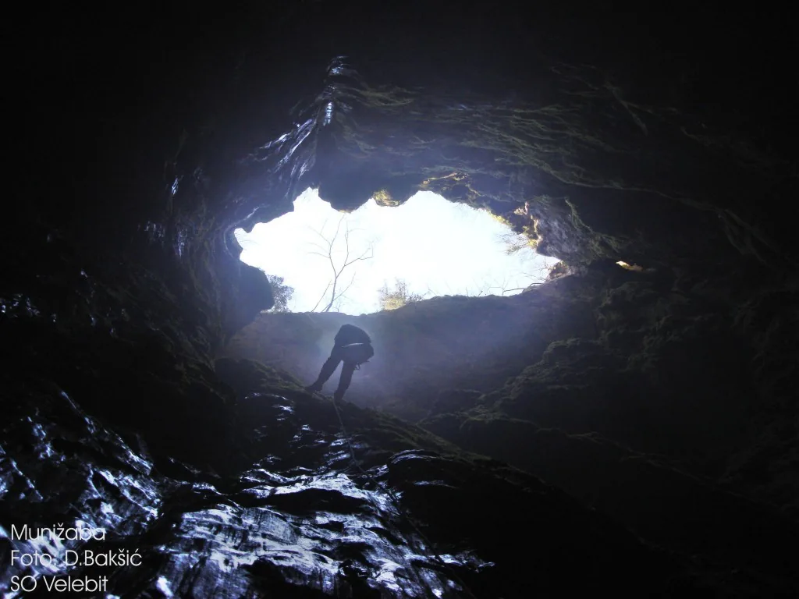

Najbolji dan u životu
Još tijekom ekspedicije u Punaru, Olga je spomenula Munižabu. Moje svježe i vatreno speleološko srce, koje je tek počelo otkrivati čari speleologije, odmah je reagiralo – upitala sam Olgu mogu li i ja poći.

Napisala: Iva Ćurković
Fotografije: Paško Visković
Ekipa: Iva Čurković, Olga Jerković Perić (SOV), Dario Mrkonjić (SOM), Paško Visković (Meandar), Venio Fabijančić (SUE)
Još tijekom ekspedicije u Punaru, Olga je spomenula Munižabu. Moje svježe i vatreno speleološko srce, koje je tek počelo otkrivati čari speleologije, odmah je reagiralo – upitala sam Olgu mogu li i ja poći. Pomalo skeptično, odgovorila je da ćemo se dogovoriti. To me nije obeshrabrilo; nastavila sam ju nagovarati i inzistirati da me povede. Na kraju je popustila, a mojoj sreći, kada sam čula njezino skromno „da“, nije bilo kraja.
Na Punaru sam upoznala mnogo simpatičnih speleologa, a nas petero iz različitih dijelova Hrvatske odlučilo je otići u Munižabu. Ekipa je bila sastavljena od Paška iz Tučepa, Darija iz Splita, Venija iz Istre, Olge iz Zagreba i mene iz Karlovca (rodom iz Splita).
Iako su mi Olga i ostali objašnjavali što sve treba raditi, sve mi je to bilo pomalo zbunjujuće – previše informacija za nekoga tko je tek izašao iz speleološke škole. Kad sam vidjela tko sve ide – iskusni speleolozi, tzv. "brzići" – nakratko me obuzeo strah. Pomislila sam da tamo stvarno nemam što tražiti, no nisam se dala obeshrabriti. Odluka je pala: idem, makar to bilo moje vatreno krštenje.
Jednog predivnog, kišnog petka (29.8.2025.), nakon dugog radnog dana, dogovorili smo se naći u lokalnoj birtiji u Gračacu. Prve smo stigle Olga i ja, pa smo dečke čekale dva sata. Za to vrijeme ispričale smo brojne priče iz prošlih ekspedicija, ispratile kišu i dočekale dugu. Zatim su stigli Paško i Dario, a potom i Venio. Svi smo bili uzbuđeni jer je kiša prestala i omogućila nam ulazak u Munižabu što prije.
Vozeći se drndavom cestom, uz Venijeve vješte vozačke sposobnosti, dolazimo do okretaljke. Tamo preraspodjeljujemo stvari, hranu i opremu, navlačimo kordure i šumskim putićem dolazimo do jame. U jamu ulazimo oko 21:30. Na prvi pogled, ulaz izgleda kao obična vrtača – ništa ne odaje dojam da se ispod nalazi nešto toliko impozantno.
Pomalo nervozna, ulazim iza Olge i Venija. Nedugo nakon ulaska slijedi spektakl. Dugačka vertikala, okružena masivnim stijenama, daje osjećaj kao da se nalazim u crijevima nekog golemog diva. Osjećala sam se tako malenom i poniznom. Moje uzbuđenje bilo je golemo. Potaknuta entuzijazmom, izustila sam rečenicu: „Ovo mi je najbolji dan u životu!“ (Istina, više sam je puta u sebi povukla, ali nema veze.)
Nakon relativno brzog spuštanja, dolazimo na "dno". Sve oko nas je veliko, moćno i nestvarno – a tek smo na pola puta. Sada nas čeka sat vremena hodanja kroz kamenu i siparastu utrobu zemlje. Prizori su nevjerojatni. Nailazimo na prekrasna jezera i – nešto manje prekrasno – blato po kojem sam se veselo valjala, a kasnije zbog toga požalila.
Vrijeme u jami čudno prolazi i kao da je u trenu prošlo, a već smo stigli do starog bivka, na oko 300 m dubine. Cilj nam je bio premjestiti bivak na novo mjesto, na otprilike 600 m dubine. Uzimamo sve važne stvari – posuđe, kartuše, nešto stare vode – i krećemo dalje.
Slijedi jako zabavnih, ali i zahtjevnih 300 metara jame: blatnjavi tobogani, meandri, provlačenja s dvije transportke, prečka koju sam prelazila prvi put u životu... Sve skupa djelovalo je kao da smo u podzemnom lunaparku. U jednom trenutku sam se i izgubila – zalutala sam u jedan kanal, no srećom, Dario i ja brzo smo shvatili gdje smo se razdvojili i ponovno se našli.
Nakon puno zabave i truda, oko 6 ujutro stižemo u bivak. Umorni i s jedva otvorenim očima slažemo ležajeve, kuhamo čaj, spajamo vreće za spavanje (jer je Venio svoju zaboravio), i napokon tonemo u moj prvi pravi jamski san.
Sljedeće čega se sjećam jest da je 19 sati navečer. Dario jako hrče, a ja nemam pojma gdje su svi, koliko dugo spavamo ni što se događa. Oboje se budimo izgubljeni u vremenu i prostoru. Ubrzo začujemo korake – dolazi veseli Paško. Ispričao nam je kako su on, Olga i Venio više puta dolazili provjeriti kako smo, ali bi nas svaki put zatekli kako spavamo još dubljim snom nego prije.
Paško se tada uputio po vodu, a Dario i ja smo skuhali čaj kako bi se ostatak ekipe mogao ugrijati. Moram priznati da nas je i samo kuhanje čaja iscrpilo, pa smo se brzo vratili u topli bivak.
Uvijek sam slušala kako vrijeme u jami čudno teče – i moram priznati da je doista tako. Na neki čudan način, spavanje u jami mi se jako svidjelo. Potpuno izolirani, 600 metara ispod površine zemlje, osjetila sam neobičnu slobodu.
Kad smo se svi ponovno ušuškali u vreće, trebalo je „odmoriti“ od onih 14 sati spavanja.
Sljedećeg jutra Dario i ja krećemo prvi, dok ostatak ekipe još zasluženo spava. U laganom i veselom ritmu dobro napredujemo – malo stanemo, malo jedemo, malo pričamo. Na svakom sidrištu održim mini koncert, pa vjerujem da je Dariu glazbe bilo dosta za idućih nekoliko mjeseci.
Polako prolazimo uske i neugodne dijelove, a uskoro čujemo da nam se približava i ostatak ekipe. Olga i Venio idu naprijed skuhati čaj u starom bivku, a Paško, Dario i ja nastavljamo svojim tempom. U tom našem „laganini“ ritmu uspijevamo se malo izgubiti – i dva sata tražimo put do bivka, koji je zapravo bio udaljen svega desetak minuta. Nakon što su nas obuzele misli o tome da ćemo ostati zarobljeni u jami, da ću dobiti otkaz jer neću stići na posao – ugledali smo Olgu, Venija, bivak... i kavu. Optimizam se odmah vratio.
Preostalo nam je još oko tri sata penjanja i 200 metara vertikale. Treba napomenuti da sam do tada bila najviše u jami dubokoj 200 metara i s maksimalno 40 metara vertikale. Ovo je za mene bio veliki izazov.
Uz laganu čakulicu s Olgom, korak po korak, penjemo se sve više. Napokon dolazimo do zadnjeg prevjesa, s kojeg se nazire – nebo. Zvijezde te večeri bile su najljepše koje sam ikad vidjela. Nakon dva dana pod zemljom, osjećaj gledanja u zvjezdano nebo bio je neopisiv.
Iako je ovo bio veliki izazov – jedva čekam opet u Munižabu! Hvala ekipi na podršci❤️ Nije mi se zgadila speleologija
P.S. Silom prilike naučila sam koristiti pantin 😅